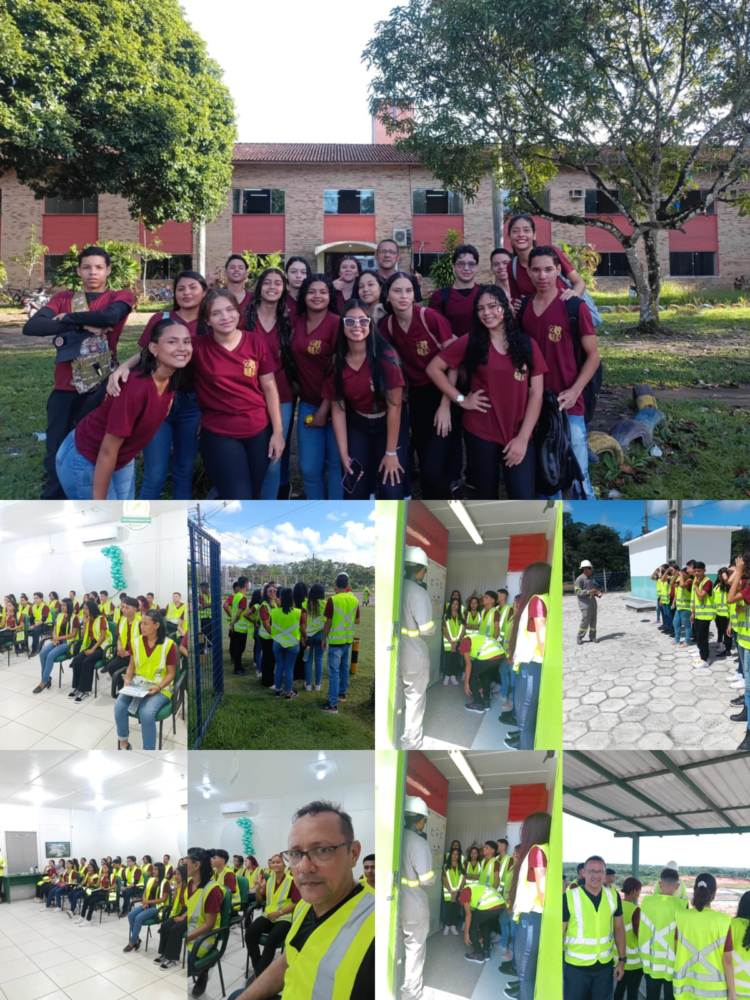
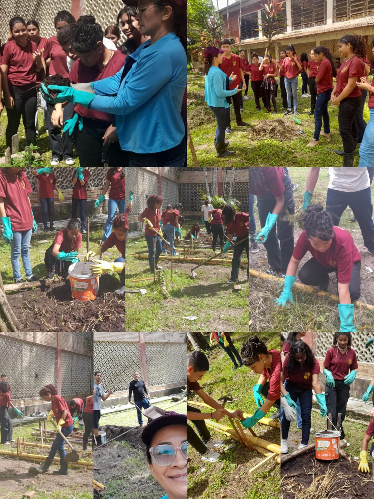

podcast
Novidaes do Jk, e so escutar
Jk❤️ Uma nova história. Aula Prática. Turma alimentos sub 23 A. Orientação Professora Deuza Leitão Disciplina TPOA-CARNE . Aula de fabricação de hambúrguer
Jk❤️ Uma nova hstória. Aula Prática . Turma Segurança no Trabalho 23A Orientação Professor Harley Ferreira Visita técnica na Empresa Guamá Resíduos 👏👏👏👏
Jk❤️uma nova história; Com a mão na massa 🤝 continuidade no projeto da horta com orientação dos professores Odilene , Harley e Rodrigo 👏👏👏
Novidaes do Jk, e so escutar